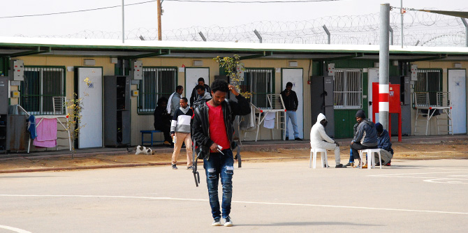

Migration in all its forms – expatriates returning to their home countries, foreign workers, refugees, and asylum seekers – is a defining aspect of the global age that features prominently on the public and political agendas of most of the world’s established democracies, including Israel. It involves not just physically moving to a new place, but also cultural adaptation that brings drastic changes in many areas of the immigrant’s life.
Israel has been a country of immigration ever since it was founded, and even before then. The cultural encounter between veteran residents and new immigrants has a profound impact on the nature of Israeli society and the Israeli establishment, as well as on aspects of Israel’s education system, culture, job market, and political system.
Many Mandel graduates are on the forefront of interactions with immigrants and migrants. In order to offer them an opportunity to explore the subject of migration and immigration in depth and to introduce them to relevant professional tools, the Mandel Graduate Unit is holding a seminar on immigration, migration and refugees from February through April 2017. This seminar will provide time and space for a shared learning experience that will enable each participant to define the change they would like to bring about and the way in which they wish to have an impact. The seminar will include meetings with experts from Israel and around the world, as well as a study trip to Macedonia, which has been a major transit point for refugees from Syria and other migrants on their way to Western Europe in recent years.
The seminar opened on February 13 with a study day and field trip focusing on migrants and refugees in Israel. Participants visited the Holot detention center, which was established by the Israeli government to hold migrants from Eritrea and Northern Sudan. There they met with Junior Commissioner Yaakov Shalom, the director of Holot, and Adv. Inbal Mashash, the director of the Population and Immigration Authority’s activities at the Holot and Sarahonim detention facilities, who presented the perspective of the Ministry of the Interior and the Israel Prison Service on this issue.
The group then met with Eran Doron, director of the Ramat Hanegev regional council and a graduate of Cohort 14 of the Mandel School for Educational Leadership, who told them about the facility’s impact on the region. A tour of Israel’s border with Egypt was next. At Nitzana, a community alongside the border, the graduates met representatives of local residents, who spoke about the challenges they face as a consequence of the Holot facility, and about their activities on behalf of its inmates.

{kind=link}